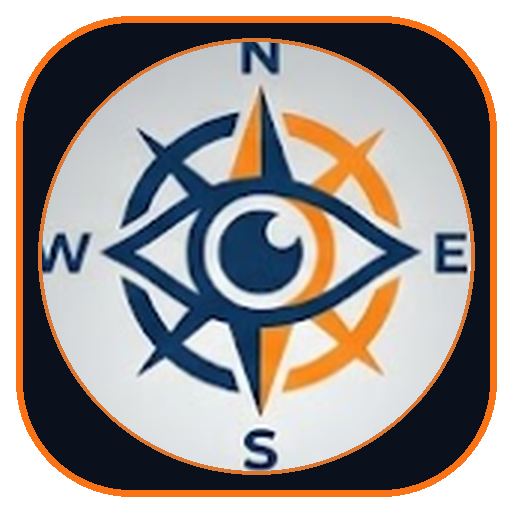

300 m
M5 Motorway · Northbound Corridor
•
ISRO NavIC Dual-Band L5/S Active

🇬🇧 IO-VNBD M5 Motorway (115 km/h Cruise)
🇬🇧 IO-VNBD Coventry Ring Road (Track S1 - Roundabouts)
🇬🇧 IO-VNBD Stationary ZUPT (Track Vw1 - Calibration)
0
km/h
12 min
· 6.4 km
12:15 AM · Real CAN-bus Telemetry Route
Start
NavIC Satellites
7 L5/S Lock
100Hz EKF Drift
0.0 m (0.0%)
Mount Level
Pitch 0.0°
Accel X / Y
0.00 / 0.00
Accel Z (Gravity)
9.81 m/s²
Heading Direction
359° N
Inject Pothole Spike
HIL Bridge:
Connected